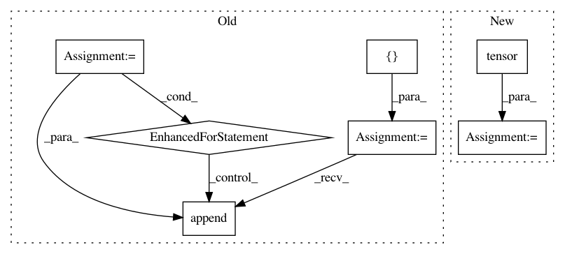

b9e27136a5e80850df7859b8f3ca23d396f1b009,snorkel/learning/pytorch/rnn/lstm.py,LSTM,forward,#LSTM#Any#Any#,22
Before Change
output, _ = self.lstm(encoded_X, hidden_state)
output, _ = pad_packed_sequence(output, batch_first=True)
outs = []
for i in range(X.size(0)):
outs.append(output[i, seq_lengths[i] - 1,:])
output = torch.stack(outs, dim=0)
return self.output_layer(self.dropout_layer(output))
def initalize_hidden_state(self, batch_size):
After Change
seq_lengths, perm_idx = seq_lengths.sort(0, descending=True)
X = X[perm_idx, :]
inv_perm_idx = torch.tensor([i for i, _ in sorted(enumerate(perm_idx), key=lambda idx: idx[1])], dtype=torch.long)
encoded_X = self.embedding(X)
encoded_X = pack_padded_sequence(encoded_X, seq_lengths, batch_first=True)
_, (ht, _) = self.lstm(encoded_X, hidden_state)
In pattern: SUPERPATTERN
Frequency: 3
Non-data size: 7
Instances
Project Name: snorkel-team/snorkel
Commit Name: b9e27136a5e80850df7859b8f3ca23d396f1b009
Time: 2018-05-04
Author: stephenhbach@gmail.com
File Name: snorkel/learning/pytorch/rnn/lstm.py
Class Name: LSTM
Method Name: forward
Project Name: PIQuIL/QuCumber
Commit Name: 9a2903dac097a7f3633f6c828533ed385c7159c9
Time: 2019-07-17
Author: emerali@users.noreply.github.com
File Name: qucumber/utils/data.py
Class Name:
Method Name: extract_refbasis_samples
Project Name: open-mmlab/mmcv
Commit Name: 459d728c47d70216672accd65673593f4cdbf8ec
Time: 2021-02-03
Author: maningsheng@sensetime.com
File Name: mmcv/onnx/onnx_utils/symbolic_helper.py
Class Name:
Method Name: _interpolate_get_scales_if_available